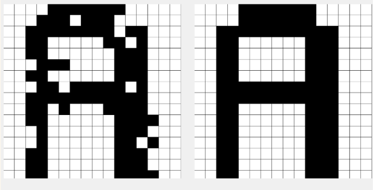

Informatique & données
Deux projets Python,
deux problèmes à explorer.
Reconnaître une lettre déformée et rechercher un itinéraire court entre quinze villes.
Essayer le réseau ↓
Ce que j’ai développé
Reconnaissance de lettres
Adaptation du réseau en 16 × 16 pixels et création de son interface avec Tkinter.
Recherche d’itinéraire
Développement d’un algorithme génétique : sélection, croisements et mutations pour rechercher un circuit court.
À vous d’essayer
Modifiez quelques pixels, puis observez la reconstruction. Cette adaptation web permet de découvrir le principe du projet Python.
Ce réseau expérimental peut se tromper : une lettre modifiée peut être confondue avec une autre ou ne pas être reconnue.
Modifiez quelques cases, puis lancez le réseau
Chargez une lettre, cliquez sur quelques cases pour la modifier, puis lancez le réseau.
Au clavier : utilisez les flèches pour choisir une case, puis la touche Espace pour la remplir ou l’effacer.